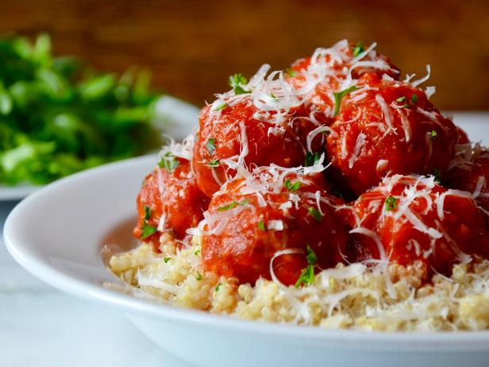

Quinoa Meatballs

Meatballs on Top of Pasta
This is a meatball recipe from FitMenCook. It is a healthy option for meatballs using turkey and quinoa.
It is a high protein low fat dish you can add to most base carbs.
I found the recipe 2 years ago and have been making it ever since. It is quick and easy to end up with a tasty lunch or dinner!
Ingredients
- 1lb Ground Turkey
- 1cu Quinoa
- 1 Egg
- Italian Seasoning
- Canned Pasta Sauce
Steps>
- Cook Quinoa
- Mix egg, raw turkey, seasoning and quinoa in a mixing bowl
- Make into balls
- Cook in a pan, searing for 90sec on each side
- Pour in sauce and simmer on medium for 12min
- Enjoy!
Back to Home